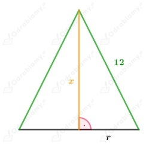

Niech e i f będą długościami przekątnych rombu.
Z treści zadania wiemy, że:
założenia:
Zapisujemy wzór funkcji opisującej sumę długości przekątnych rombu:
Wyznaczamy pochodną funkcji P:
Wyznaczamy punkty krytyczne:
Funkcja pochodna zmienia znak z ujemnego na dodatni w punkcie krytycznym, zatem w tym punkcie funkcja P przyjmuje minimum.
Sprawdzamy, czy minimum funkcji jest również wartością najmniejszą:
Wnioskujemy, że funkcja P ma w f=10 wartość najmniejszą.
Wyznaczamy tę wartość:
Z treści zadania wiemy, że długość promienia okręgu wpisanego w trójkąt prostokątny wynosi:
Jeżeli okrąg jest opisany na trójkącie prostokątnym, to średnicą okręgu jest długość przeciwprostokątnej trójkąta prostokątnego.
Niech a i b będą długościami przyprostokątnych trójkąta prostokątnego, natomiast wiemy, że przeciwprostokątna ma długość 2R, gdzie R jest długością promienia okręgu opisanego na tym trójkącie.
Wiemy, że jeżeli okrąg jest wpisany w trójkąt prostokątny, to:
zatem:
Jeżeli trójkąt jest trójkątem prostokątnym, to:
Zatem:
Wobec tego:
założenia:
Wobec tego:
Zapisujemy wzór funkcji opisującej długość promienia R:
Wyznaczamy pochodna funkcji f:
Wyznaczamy punkty krytyczne:
Wiemy, że:
Zatem funkcja pochodna zmienia znak z ujemnego na dodatni w punkcie b=4+2√2, więc funkcja f ma w tym punkcie minimum.
Sprawdzamy, czy w tym punkcie funkcja f ma wartość najmniejszą.
Zatem funkcja f ma w punkcie b=4+2√2 wartość najmniejszą.
Wyznaczamy długości boków trójkąta:
Wnioskujemy, że trójkąt ma boki długości:
a)
Dany jest graniastosłup prawidłowy trójkątny.
Niech a będzie długością krawędzi podstawy (długością boku trójkąta równobocznego), natomiast b wysokością graniastosłupa.
Z treści zadania wiemy, że:
założenia:
Wiemy, że:
Zapisujemy wzór funkcji opisującej objętość graniastosłupa:
Wyznaczamy pochodną funkcji V:
Wyznaczamy punkty krytyczne:
Zauważamy, że funkcja pochodna zmienia znak z dodatniego na ujemny w a=4, zatem w tym punkcie funkcja V ma maksimum.
Sprawdzamy, czy maksimum jest również wartością największą:
Wnioskujemy, że funkcja V ma wartość największą dla a=4.
Obliczamy największą objętość graniastosłupa spełniającego warunki zadania:
b)
Dany jest graniastosłup prawidłowy czworokątny.
Niech a będzie długością krawędzi podstawy (długością boku kwadratu), natomiast b wysokością graniastosłupa.
Z treści zadania wiemy, że:
założenia:
Wiemy, że:
Zapisujemy wzór funkcji opisującej objętość graniastosłupa:
Wyznaczamy pochodną funkcji V:
Wyznaczamy punkty krytyczne:
Zauważamy, że funkcja pochodna zmienia znak z dodatniego na ujemny w a=3, zatem w tym punkcie funkcja V ma maksimum.
Sprawdzamy, czy maksimum jest również wartością największą:
Wnioskujemy, że funkcja V ma wartość największą dla a=3.
Obliczamy największą objętość graniastosłupa spełniającego warunki zadania:
Z treści zadania wiemy, że z drutu o długości 720 cm zrobiono szkielet akwarium w kształcie prostopadłościanu.
Krawędzie podstawy pozostają w stosunku 1:2.
Niech a i 2a będą długościami krawędzi podstawy prostopadłościanu, natomiast b jego wysokością.
Wobec tego:
założenia:
Wiemy, że:
Wobec tego zapisujemy wzór funkcji opisującej objętość graniastosłupa:
Wyznaczamy pochodną funkcji V:
Wyznaczamy punkty krytyczne:
Zauważmy, że:
Wobec tego w punkcie a=40 funkcja V ma maksimum.
Sprawdzamy, czy maksimum jest również wartością największą funkcji:
Wnioskujemy, że funkcja V przyjmuje wartość największą dla a=40.
Wyznaczamy wymiary prostopadłościanu spełniającego warunki zadania:
Odp: Wymiary prostopadłościanu, to: 40 cm x 80 cm x 60 cm.
Niech a będzie długością krawędzi prostopadłościanu, a b jego wysokością.
Z treści zadania wiemy, że:
Zatem:
założenia:
wiemy, że 2a>0, bo a>0, zatem:
Wiemy, że:
Zapisujemy wzór funkcji opisującej objętość prostopadłościanu:
Wyznaczamy pochodną funkcji V:
Wyznaczamy punkty krytyczne:
Wiemy, że:
Zatem w punkcie a=2 funkcja V ma maksimum.
Sprawdzamy, czy maksimum jest również wartością największą funkcji.
Wnioskujemy, że funkcja V przyjmuje wartość największą, gdy a=2.
Wyznaczamy wymiary prostopadłościanu:
Odp: Prostopadłościan jest sześcianem o krawędzi długości 2 cm.
a)
Wiemy, że:
Wyznaczamy pochodną funkcji V:
Wyznaczamy punkty krytyczne:
Zauważmy, że:
Wobec tego funkcja V ma maksimum dla r=8/5.
Sprawdzamy, czy maksimum jest tez wartością największą funkcji.
Wobec tego dla r=8/5 funkcja V przyjmuje wartość największą.
Wyznaczamy długości boków trójkąta:
Wnioskujemy, że trójkąt ma boki długości: 2,4; 2,4, 3,2.
b)
Wiemy, że:
Rozpatrzmy funkcję pomocniczą:
Zauważmy, że funkcja V przyjmuje wartość największą dla takiego r dla którego funkcja f przyjmuje wartość największą.
Wyznaczamy pochodną funkcji f:
Wyznaczamy punkty krytyczne:
Zauważmy, że:
Wobec tego funkcja f ma maksimum dla r=8/5.
Sprawdzamy, czy maksimum jest tez wartością największą funkcji.
Wobec tego dla r=8/5 funkcja f przyjmuje wartość największą.
Wyznaczamy długości boków trójkąta:
Wnioskujemy, że trójkąt ma boki długości: 2,4; 2,4, 3,2.
Naszkicujmy rysunek pomocniczy:

Zauważmy, że korzystając z twierdzenia Pitagorasa dostajemy:
założenia:
Wiemy, że:
Wobec tego:
Wyznaczamy pochodną funkcji V:
Wyznaczamy punkty krytyczne:
Zauważmy, że:
Wobec tego funkcja V ma maksimum dla x=4√3.
Sprawdzamy, czy jest to również wartość największa funkcji:
Wnioskujemy, że funkcja V przyjmuje wartość największą dla x=4√3.